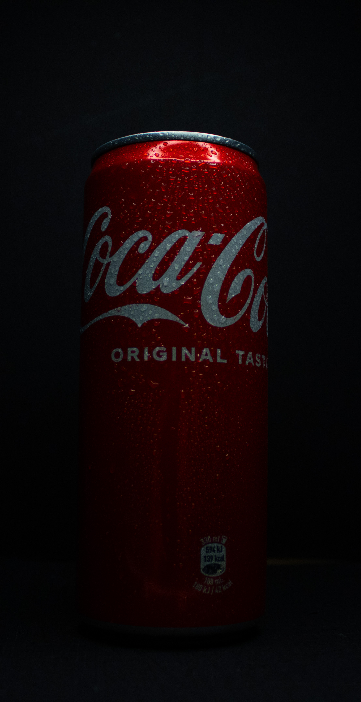

Pubblicità Coca Cola
Questo spot pubblicitario per Coca Cola è stato ideato, girato e montato da me. Ho curato personalmente tutte le fasi della produzione, utilizzando una fotocamera Canon e attrezzatura economica, mentre il montaggio video e audio è stato realizzato con Adobe Premiere Pro.
Il video completo lo puoi trovare qui